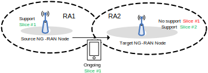

Study on enhancement of Radio Access Network (RAN) slicing
(Release 17)
The present document has been developed within the 3rd
Generation Partnership Project (3GPP TM) and may be further
elaborated for the purposes of 3GPP.
The present document has not been subject to any approval process by the
3GPP Organizational Partners and shall not be implemented.
This Specification is provided for future development work within 3GPP
only. The Organizational Partners accept no liability for any use of
this Specification.
Specifications and Reports for implementation of the 3GPP TM
system should be obtained via the 3GPP Organizational Partners'
Publications Offices.
3GPP
Postal address
3GPP support office address
650 Route des Lucioles - Sophia Antipolis
Valbonne - FRANCE
Tel.: +33 4 92 94 42 00 Fax: +33 4 93 65 47 16
Internet
http://www.3gpp.org
Copyright
Notification
No part may be reproduced except as authorized by written
permission.
The copyright and the foregoing restriction extend to reproduction in
all media.
UMTS™ is a Trade Mark of ETSI registered for the benefit of its
members
3GPP™ is a Trade Mark of ETSI registered for the benefit of its
Members and of the 3GPP Organizational Partners
LTE™ is a Trade Mark of ETSI registered for the benefit of its Members
and of the 3GPP Organizational Partners
GSM® and the GSM logo are registered and owned by the GSM
Association
This Technical Report has been produced by the 3rd Generation
Partnership Project (3GPP).
The contents of the present document are subject to continuing work
within the TSG and may change following formal TSG approval. Should the
TSG modify the contents of the present document, it will be re-released
by the TSG with an identifying change of release date and an increase in
version number as follows:
Version x.y.z
where:
x the first digit:
1 presented to TSG for information;
2 presented to TSG for approval;
3 or greater indicates TSG approved document under change
control.
y the second digit is incremented for all changes of substance, i.e.
technical enhancements, corrections, updates, etc.
z the third digit is incremented when editorial only changes have
been incorporated in the document.
1 Scope
The present document provides descriptions of use cases and solutions
with regard to enhancement of Radio Access Network (RAN) slicing for
NR.
2 References
The following documents contain provisions which, through reference
in this text, constitute provisions of the present document.
- References are either specific (identified by date of publication,
edition number, version number, etc.) or non‑specific.
- For a specific reference, subsequent revisions do not apply.
- For a non-specific reference, the latest version applies. In the
case of a reference to a 3GPP document (including a GSM document), a
non-specific reference implicitly refers to the latest version of that
document in the same Release as the present document.
[1] 3GPP TR 21.905: "Vocabulary for 3GPP Specifications".
[2] 3GPP TS 28.541: "5G Network Resource Model (NRM)".
[3] 3GPP TS 23.502: "Procedures for the 5G System; Stage 2".
3 Definitions of
terms, symbols and abbreviations
3.1 Terms
For the purposes of the present document, the terms given in TR
21.905 [1] and the following apply. A term defined in the present
document takes precedence over the definition of the same term, if any,
in TR 21.905 [1].
3.2 Abbreviations
For the purposes of the present document, the abbreviations given in
TR 21.905 [1] and the following apply. An abbreviation defined in the
present document takes precedence over the definition of the same
abbreviation, if any, in TR 21.905 [1].
4 General
The present document is organized as follows:
- Clause 5 is to address the objective of enabling UE fast access to
the cell supporting the intended slice. Furthermore, clause 5.1 studies
on slice based cell (re)selection under network control and clause 5.2
studies on slice based RACH configuration
- Clause 6 is to address the objective of supporting service
continuity
- Clause 7 provides the conclusions
5
Study mechanisms to enable UE fast access to the cell supporting the
intended slice
5.1 Slice
based cell (re)selection under network control
5.1.1 Scenario and issue
description
General description for the scenario:
- Multiple and different slices can be supported on different
frequencies
- Multiple and different slices can be supported on the same
frequency in different regions
For each scenario we study both IDLE and INACTIVE and determine
whether there is need for solutions. Connected mode will also be
considered but with a lower priority.
Figure 5.1.1-1: Examples for slice deployment scenarios
In the examples shown in Figure 5.1.1-1, slice 1 refers to e.g.,
eMBB, and slice 2 refers to e.g., URLLC. "Cell X" in the figures
represent a set of cells.
Geographical Location 1 is deployed in the factory or hospital. In
this location, F1 supports slice 1 (e.g., eMBB), while F2 supports both
slice 1 and slice 2 (e.g. eMBB and URLLC).
Geographical Location 2 is the public area. F1 and F2 all supporting
slice 1 (e.g., eMBB) for smart phone users, no slice 2 (e.g., URLLC) is
supported in Geographical Location 2. And F2 is deployed as hotspot to
provide wideband access.
Geographical Location 3 illustrates that different slices are
supported on different frequencies. F1 only supports slice 1 and F2 only
supports slice 2.
Geographical Location 4 illustrates a typical scenario that slices
are available via multiple frequencies. And one or a set of frequencies
are preferred for certain slice, e.g. F1 is preferred for slice 2 and F2
is preferred for slice 1 in Geographical Location 4.
eMBB and URLLC slices are used only as an example of various slices.
The deployment of any slice on any frequency band is up to network
implementation.
RAN2 common understanding is that intended slice is based on the
information AS receives from NAS for the particular use case. This may
be different in different cases:
- In case of cell selection and reselection, the intended slice means
the allowed or requested S-NSSAI(s).
- For the initial registration, and requesting new S-NSSAI(s):
intended slices = Requested S-NSSAI(s)
- For idle-mode mobility: intended slices = allowed S-NSSAI(s)
- In case of MO traffic, the intended slice means the S-NSSAI
associated with MO traffic based on indication from NAS to AS. For MO
service, UE is aware of the intended slice.
- In case of MT traffic, UE is unaware of the slice for the paged
service in current NR specification.
The following issues are studied:
Issue 1: The UE is unaware of the slices supported on
different cells or frequencies, which prevents UE from (re)select to the
cell or frequency supporting the intended slice.
Issue 2: Dedicated priorities would not be available to the
UE prior to first RRC connection establishment and only remain valid
before T320 expires upon entering IDLE mode. In addition, dedicated
priorities are discarded each time when UE entering CONNECTED mode and
need to be configured again before UE leaving CONNECTED
mode.
Issue 3: Operator may require different frequency priority
configurations for the specific slice in different areas, however the
dedicated priority always overwrites the broadcast priorities if
configured.
Issue 4: If the serving cell is unable to support the
requested slices, the serving cell may need to perform handover to a
cell supporting the requested slices or release the RRC connection. That
may increase control plane signalling overhead as well as long control
plane latency for the UE to access the network.
5.1.2 Solutions
The following solutions are studied:
Solution 1: Legacy dedicated priority via RRCRelease
message.
Solution 1 (i.e., Legacy dedicated priority via RRCRelease
message) cannot address issue 2 and issue 3.
Solution 2: Rel-15 mechanisms such as HO, CA, DC and
redirection can be used to access the intended slice in different
cell.
Solution 2 is legacy solution. With solution 2, the UE is still
unaware of the slices supported in different cell or frequencies and the
HO, CA, DC and redirection can be used to compensate for such loss with
increased signalling overhead and latency. HO, CA, DC, redirection are
applicable only for connected mode UE.
There is no complexity to support solution 2.
Solution 3: Slice related information for cell selection,
e.g., the supported slice info of serving cell and neighboring cells, is
provided in the system information.
Solution 3 can address issue 1, issue 2 and issue 4. There is benefit
to broadcast slice related cell selection info in SIB.
The concerns on security and SIB payload size for broadcasting slice
related cell selection info need to be resolved in WI phase (e.g., by
providing only SST, on-demand SIB, SIB segmentation, slice grouping or
slice associated UAC information).
For cell selection scenario, RAN2 may discuss during WI whether to
broadcast supported slice of serving cell in SI message and how to solve
SIB1 concerns.
The solution of adding the intended slice for MT access in slice
specific cell selection is not pursued.
Solution 4: Slice related information for cell reselection is
provided in the system information or RRCRelease
message.
Solution 4 can address the issue 1, issue 2, issue 3 and issue 4.
There is benefit to broadcast slice related cell reselection info in
SIB. The slice info (with similar information as agreed slice info in SI
message) can be added in RRC release message. Details can be discussed
in WI phase.
The concerns on security and SIB payload size for broadcasting slice
related cell reselection info need to be resolved in WI phase (e.g.,
providing only SST, on-demand SIB, SIB segmentation, slice grouping or
slice associated UAC information).
To assist cell reselection, RAN can broadcast the supported slice
info of the current cell and neighbour cells, and cell reselection
priority per slice. The slice info may be: providing only SST, on-demand
SIB, SIB segmentation, slice grouping (if any), or slice associated UAC
information where other solutions are not precluded. Details can be
discussed in WI phase. And, how to ensure UE doesn't lose coverage due
to slice prioritization can be considered in WI phase.
The solution of adding the intended slice for MT access in slice
specific cell reselection is not pursued.
Slice group is supported for both solution 3 and solution 4. Whether
to define a new grouping mechanism or reusing UAC access category is
left to WI phase.
5.2 Slice based RACH
configuration
5.2.1 Scenario and issue
description
The intentions for slice based RACH configuration are as follows:
Intention 1: RACH resource isolation. From marketing point of
view, some of the industrial customers have the requirement for access
resource isolation, in order to provide guaranteed RA resources for
their sensitive slices.
Intention 2: Slice access prioritization. In R15 and R16, all
slices are sharing the same RA resources and cannot be differentiated by
network side. But some slices may need to be prioritized during the RA
procedure.
5.2.2 Solutions
The following solutions are studied:
Solution 1: Slice-specific separate RACH resources pool can
be configured per slice or per slice group, in addition to the existing
common RACH resources.
The association between slices and slice-specific RACH resources can
be configured and provided to UE in SIB and dedicated signalling.
Separated PRACH configuration (e.g., transmission occasions of
time-frequency domain and preambles) can be configured for slice or
slice group. Separated PRACH configuration for slices does not imply PHY
layer impacts.
Solution 2: Slice-specific RACH parameters prioritization can
be configured per slice or per slice group.
Existing RACH parameters prioritization (i.e.,
scalingFactorBI and powerRampingStepHighPriority) can
be supported as baseline for slices-specific RACH parameter
prioritization.
Slice group is supported for solution 1 and solution 2. Whether to
define a new grouping mechanism or reusing UAC access category is left
to WI phase.
Slice based RACH configuration can be applied to idle and inactive
UE. Solution 1 and Solution 2 can work independently in a complementary
way. Neither solution 1 nor solution 2 may not be applicable to all
possible slices.
The following open issues may be considered in WI phase:
a) For slice specific RACH, how to perform RACH type selection (e.g.,
2-step and 4-step).
b) The fallback mechanism, e.g., whether to support 2 step
slice-based RACH fallback to 4-step slice-based or common RACH.
c) The collision in case that slice-specific RA prioritization is
configured together with legacy RA prioritization (e.g., MPS and MCS
UEs).
6
Study necessity and mechanisms to support service continuity
6.1 Scenario and issue
description
The following two scenarios are considered to support service
continuity.
Scenario 1: Slice resource shortage in case of Intra-RA
mobility and Inter-RA mobility
Figure 6.1-1: Service interruption due to slice resource shortage
As shown by Figure 6.1-1, the UE's ongoing slice(s) is/are supported
by both the source and the target NG-RAN node. At the time of handover,
the target node fails to accept the UE with at least one of the ongoing
S-NSSAIs due to e.g. high slice-related load at the target node. Under
such circumstance, the service(s) for failed ongoing slice(s) is/are
interrupted for the UE.
It should be noted that remapping of traffic into the resource pool
used by other slices requires a pre-configured policy allowing such
action. The remapping should avoid overloading the resource pool of the
target slice. Any solution to this issue should comply with the RRM
policy model defined in TS 28.541 [2] and be validated by SA5.
How to support the slice recovery (i.e., re-mapping of remapped slice
to on-going slice) when the NG-RAN node recovers enough resources to
serve the on-going slice(s) will be discussed in normative phase.
Scenario2: Non-supported slice in case of Inter-RA
mobility

Figure 6.1-2: Service interruption due to slice not supported
As shown by Figure 6.1-2, the UE is moving towards an area that does
not support at least one of UE's ongoing slices. The target node fails
to accept the UE with at least one of the ongoing S-NSSAIs. Under such
circumstance, the service(s) for failed ongoing slice(s) is/are
interrupted for the UE.
This scenario is only valid if there is a specific SLAs, where the
original slice is required to be available in a specific geographical
area (TA/RA) and where services used on the original slice are also
required to have continuity if moving outside the geographical area. It
is also assumed that new PDU sessions of the same slice are not
initiated in the new geographical area i.e., the SLA applies to
connected mode mobility only.
Scenario 3: Moving back for slice resource shortage in case
of Intra-RA mobility and Inter-RA mobility
Figure 6.1-3: Moving back scenario due to slice resource shortage
This is a continuation scenario of scenario 1. As shown by Figure
6.1-3, the UE's ongoing slice(s) is/are supported by both the source and
the target NG-RAN node. At the time of handover, the source node may
serve at least one of the S-NSSAIs with degraded performance, or already
rejects at least one of the S-NSSAIs, due to e.g., high slice-related
load at the source node. Meanwhile the target node can fully support
these S-NSSAIs.
Scenario 4: Moving back for non-supported slice in case of
Inter-RA mobility
Figure 6.1-4: Moving back scenario due to slice not supported
This is a continuation scenario of scenario 2. As shown by Figure
6.1-4, at the time of handover, the source node may serve the UE with at
least one of the S-NSSAIs not supported by the target node. The UE is
moving towards an area that supports at least one of UE's these
slices.
Scenario 5: Slice resource shortage for MR-DC
Figure 6.1-5: Service interruption due to slice resource shortage in
SN
As shown by Figure 6.1-5, the UE's ongoing slice(s) is/are supported
by both the MN and the SN. However, in case of SN addition or
modification procedure, the SN fails to accept the UE with at least one
of the ongoing S-NSSAIs due to e.g., high slice-related load at the SN.
Under such circumstance, the services associated with these ongoing
slices may be interrupted at the SN side.
Scenario 6: Slice overload in RAN node in absence of
mobility
It is possible that resource shortage happens for a slice 1 as in
scenario 1. In this case, some ongoing PDU sessions associated to this
slice 1 may be offered degraded service even in the absence of
mobility.
It is also possible that after taking an action to avoid resource
shortage in slice 1, the resource shortage is resolved while the UE is
still in the cell. In that case, any action taken can be reversed.
6.2 Solutions
NOTE: Feasibility of solutions in 6.2.1, 6.2.2.1 and 6.2.4.1 at
system level requires further work involving both RAN3 and SA2.
6.2.1 Re-mapping decision in
NG-RAN node
In solutions where the target NG-RAN node decides the re-mapping at
incoming handover, the target NG-RAN node should be aware of the
re-mapping policy for the involved PDU session. The following options
are available:
6.2.1.1 Slice Re-mapping
policy generation
6.2.1.1.1 Slice
Re-mapping policy configured by OAM
Configuration in target NG-RAN node
This option assumes that the remapping policy is rather static
because it should have been validated by the tenant or the operator.
Therefore, the NG-RAN node is configured in advance with the
re-mapping policy by the OAM.
In this option, the granularity of the re-mapping policy is per slice
i.e. for each supported S-NSSAI, the target NG-RAN node is configured
with a list of possible re-mapped S-NSSAI(s) as follows:
- S-NSSAI 1 <> re-mapped list (S-NSSAI 10, S-NSSAI 11);
- S-NSSAI 2 <> re-mapped list (S-NSSAI 12, S-NSSAI 13).
6.2.1.1.2
Slice Re-mapping policy configured by CN (during NG setup)
Signaling in NG Setup Response
The NG-RAN node has received in advance the re-mapping policy in the
NG Setup Response message (or any update in the AMF configuration Update
message) from the CN.
In this option the granularity of the re-mapping policy is the slice
i.e. for each S-NSSAI supported by the target NG-RAN node, the CN
includes in the NG Setup Response (respectively AMF Configuration
Update) message an associated list of possible re-mapped S-NSSAI(s).
At the time of handover, the CN includes in the NG Handover Request
message the current PDU Session, the associated S-NSSAI and also the
list of S-NSSAI(s) to which this PDU session can be re-mapped.
In this option the granularity of the re-mapping policy can be
either:
- Per PDU session (using same principles as slice association in PDU
Session Setup);
- Per UE: even though signaled for the involved PDU session, the
choice of possible re-mapped slices for a given slice is a general
policy for the UE.
Example of per UE policy:
UE 1, any PDU session of S-NSSAI 1 <> re-mapped list (S-NSSAI
10, S-NSSAI 11)
UE 2, any PDU session of S-NSSAI 1 <> re-mapped list (S-NSSAI
12, S-NSSAI 13)
When the PDU session is created in the source NG-RAN node, the CN
includes in the NGAP PDU Session Resource Setup Request message (or the
Initial Context Setup Request message or the NG Handover Request
message) the S-NSSAI associated with the PDU session and also the list
of S-NSSAI(s) to which this PDU session can be re-mapped.
At the time of subsequent Xn handover, the source NG-RAN node
includes in the Xn Handover Request message the current PDU Session, the
associated S-NSSAI and also the list of S-NSSAI(s) to which this PDU
session can be mapped.
In this option the granularity of the re-mapping policy can be
either:
- Per PDU session (using same principles as slice association in PDU
Session Setup)
- Per UE: even though signaled for the involved PDU session, the
choice of possible re-mapped slices for a given slice is a general
policy for the UE.
The above slice-remapping principle applicable to the handover case
can be applied to MR-DC case.
6.2.1.2 Slice
Re-mapping Message Sequence Charts
6.2.1.2.1 Slice Re-mapping
for mobility case
6.2.1.2.1.1
Slice Remapping decision in target gNB at Xn based handover
Figure 6.2.1.2.1.1-1: Slice re-mapping/fallback determined by the
T-gNB
1. The S-gNB sends the HANDOVER REQUEST message to the
T-gNB.
2. If the UE's ongoing slice(s) is rejected in the target gNB, based
on the slice re-mapping policy described in clause 6.2.1, the T-gNB
makes the slice re-mapping/fallback decision. The T-gNB may send the
slice re-mapping/fallback decision in the HANDOVER REQUEST ACKNOWLEDGE
message to the S-gNB.
3. The T-gNB shall send the slice re-mapping/fallback decision to the
AMF through the PATH SWITCH REQUEST message.
4. The AMF responds the PATH SWITCH REQUEST ACKNOWLEDGE
message. The AMF may reject the PDU sessions in the PDU Session
Resource Released List IE.
6.2.1.2.1.2
Slice Remapping decision in target gNB at NG based handover
Figure 6.2.1.2.1.2-1: Slice re-mapping/fallback determined by the
T-gNB
1. The S-gNB sends the HANDOVER REQUIRED message to the
AMF.
2. The AMF sends the HANDOVER REQUEST message to the
T-gNB.
3. If the UE's ongoing slice(s) is rejected in the target gNB, based
on the slice re-mapping policy described in clause 6.2.1, the T-gNB
shall include the re-mapped/fallback decision in the HANDOVER
REQUEST ACKNOWLEDGE message to the AMF.
4. The AMF may send the slice re-mapping/fallback decision to the
S-gNB through the HANDOVER COMMAND message.
6.2.1.2.1.3
Slice Remapping decision in 5GC and target gNB at NG based handover
Figure 6.2.1.2.1.3-1: Slice re-mapping/fallback determined by the AMF
and T-gNB
1. The S-gNB sends the HANDOVER REQUIRED message to the AMF.
2. If the UE's ongoing slice(s) is not supported by the T-gNB, the
AMF may make the initial slice re-mapping/fallback decision and include
the decision in the HANDOVER REQUEST message to the T-gNB.
3. If the UE's ongoing or re-mapped/fallback slice(s) is rejected in
the target gNB, based on the slice re-mapping policy described in clause
6.2.1, the T-gNB shall include the further re-mapped/fallback decision
in the HANDOVER REQUEST ACKNOWLEDGE message to the AMF.
4. The AMF may send the slice re-mapping/fallback decision to the
S-gNB through the HANDOVER COMMAND message.
6.2.1.2.1.4 5GC Solution based
on SSC-mode 3
The call flow below uses SSC mode 3 in 5GC as the service continuity
solution:
Figure 6.2.1.2.1.4-1 Re-mapping based on SSC mode 3
Step 0: NG-RAN nodes have been configured with slice
re-mapping slice 10 to 11.
Step1: 5GC has sent the UE Allowed NSSAI to the
serving NG-RAN node and to the UE per existing procedures.
Step 2: UE has ongoing PDU session 1 of slice
10.
Step 3: Source NG-RAN triggers Handover to target
NG-RAN. The target NG-RAN node 2 informs during the HO procedure the
source NG-RAN node 1 that it accepts the PDU session 1 of slice 10
temporarily due to slice re-mapping action.
Step 4: at handover completion, the target NG-RAN
indicates to 5GC in Path Switch Request that PDU session 1 of slice 10
needs to be terminated and a new PDU session is to be setup with slice
11.
Step 5: The UE performs the post-handover
registration (as Source and Target NG RAN nodes have different slice
support, they do not belong to the same registration area for the UE).
Because 5GC received (end slice 10) at step 4, the 5GC still includes
the slice 10 in the Allowed NSSAI towards the UE at this step (the slice
is indeed still temporarily available until it receives from 5GC
notification of the final release of PDU session 1 of slice 10 at step
9).
Step 6: In reaction to step 4, the 5GC triggers
towards the UE the NAS PDU Session Modification Command to invoke SSC
mode 3. The (end slice 10, new 11) may be included towards the UE to
prompt the UE to setup the new PDU session 2 with slice 11 even if the
URSP in the UE would indicate slice 10 as higher priority.
Step 7: the UE triggers the setup of PDU session 2
with slice 11 according to SSC mode 3 procedure as per existing
procedures described in TS 23.502 [3], clause 4.3.2.2.1.
Step 8: at the expiry of SSC mode 3 timer, the 5GC
triggers the release of the PDU session 1 of slice 10 according to SSC
mode 3 procedures (existing procedures described in TS 23.502 [3],
clause 4.3.2.2.1). The 5GC sends a final the UCU (UE Configuration
Update) message in order to update the Allowed NSSAI towards the NG-RAN
and the UE. In this example, the new Allowed NSSAI is slice 11.
6.2.1.2.2 Slice Remapping
for non-mobility case
6.2.1.2.2.1 Slice
Remapping decision in SN for MR-DC case
Figure 6.2.1.2.2.1-1: Slice re-mapping/fallback determined by the
SN
This flow chart applies to the scenario of resource shortage
only.
1. The MN sends the SN Addition Request message to the
SN.
2. If the UE's ongoing slice(s) is rejected by the SN, based on the
slice re-mapping policy described in clause 6.2.1, the SN makes the
slice re-mapping/fallback decision. The SN shall include the slice
re-mapping/fallback decision in the SN Addition Request
Acknowledge message to the MN.
3. The MN may send the slice re-mapping/fallback decision to the AMF
through the PDU Session Modification Indication message.
4. The AMF responds the PDU Session Modification
Confirmation message.
6.2.1.2.2.2 Slice
Remapping decision in MN for MR-DC case
Figure 6.2.1.2.2.2-1: Slice re-mapping/fallback determined by the
MN
This flow chart applies to the scenario of resource shortage
only.
1. The MN makes the slice re-mapping/fallback decision and include
the decision in the SN Addition Request message to the SN.
2. The SN confirms the slice re-mapping/fallback decision made by the
MN in the SN Addition RequestAcknowledge message.
3. The MN may send the slice re-mapping/fallback decision to the AMF
through the PDU Session Modification Indication message.
4. The AMF responds the PDU Session Modification
Confirmation message.
6.2.1.2.2.3 Slice
Remapping Solution for Scenario 6
At the same time the NG-RAN node may notice that another slice 2
which is not overloaded has resources available and is still compatible
with the SLA of slice 1.
In short, there is a potential that some unloaded but "good enough or
better" alternative slices in the RAN could be used for the subscriber
to continue to receive service.
Figure 6.2.2.1-1: Slice re-mapping solutions: (a) with CN impact; (b)
without CN impact
This solution is applicable to scenario 2, where there are two
possible slice re-mapping solutions depending on whether the CN is
involved.
Figure 6.2.4-1 (a) shows the re-mapping solution where both the RAN
and CN parts are involved. In this case, the CN procedure is
involved.
Figure 6.2.4-1 (b) shows the re-mapping solution where the CN pat of
the slice is not changed while the RAN part of the slice is remapped.
The UL/DL traffics are relayed between the S-gNB and the T-gNB via the
Xn tunnel.
6.2.3 Resource management in
NG-RAN node
6.2.3.1 Configuration Based
Solution
The solution builds on the resource modelling described in TS 28.541
[2]. The following analysis is provided for the scenario 1 and scenario
2 respectively
- Scenario 1: Slice resource shortage in case of Intra-RA mobility
and Inter-RA mobility
As specified in TS 28.541 [2], the slice re-mapping between different
S-NSSAIs can be achieved via the prioritized resource modeling. For
example, suppose UE's ongoing slice is S-NSSAI 1 configured with
rRMPolicyMaxRatio policy, which can use at least one of the
shared resources, prioritized resources and dedicated resources. If the
dedicated resources are not available, it can use other un-used
prioritized and shared resources.
But the following needs to be further studied, e.g., for the S-NSSAI
1,
- it can explicitly use resources belonging to which S-NSSAIs;
- it can use the dedicated but not used resources of other
S-NSSAIs;
- it can preempt the used prioritized and/or shared resources from
other S-NSSAIs.
In this case, further involvement with SA5 is required.
- Scenario 2: Non-supported slice in case of Inter-RA mobility
In this case, if the T-gNB does not support certain S-NSSAIs, these
S-NSSAIs will not be included in the RRMPolicyMemberList, thus
no resource will be planned by the T-gNB, as specified in TS 28.541
[2].
For example, suppose UE's ongoing slice is S-NSSAI 1, it will not be
included in the RRMPolicyMemberList of the T-gNB. Thus the
re-mapping of S-NSSAI 1 to the supported S-NSSAI(s) of T-gNB is not
supported.
In this case, slice re-mapping is not supported yet by the
prioritized resource modeling defined in SA5. And further involvement
with SA5 is required.
6.2.3.2 Slice resource
re-partitioning
This solution is applicable to scenario 1. In this solution, the
resource limits for a particular slice in the RAN are relaxed (possibly
for a limited time period). This is applicable for resource types which
have been hard-partitioned between slices, or where a limit per slice
has been defined according to the SLA. For example, such an approach
could be applied individually (or jointly) to the following:
- hardware resources (e.g. specific processors, processing load,
intra-RAN logical nodes such as a gNB-CU-UP).
To solve this problem, the system can allow a slice to use another
slice's resources on a temporary basis i.e. making the partition soft.
The RAN may allow such temporary overflow while keeping some form of
accounting of resources used which may be used to modify the existing
SLA, or provide reporting.
Re-partitioning policy may be configured in the RAN.
The solution may have impacts in metric collection and OAM
requirements, but does not impact the core network or the UE.
6.2.3.3 Multi-carrier
radio resource sharing
This solution is applicable to scenario 1. In this solution, it is
assumed that radio resources are primarily assigned to a slice (or slice
sets) on a frequency, or cell, basis. For example, a RAN node may host
two layers as shown below:
Figure 6.2.3.3-1: RAN node supporting two layers
The solution addresses temporary resource shortage in one cell as per
scenario 1, and where the RAN node hosts another cell with different
frequency and overlapping coverage where the same slice is
available.
In above, this could be the case for slice 1 and cell 1/F2 (or also
slice 1 and cell 2/F1).
The solution consists of setting up DC or CA using user plane
resources of F1 (or F2), for some or all UEs with slice1 PDU sessions.
This action can be wholly decided by the RAN node, without referring to
the CN or other nodes. This solution can be seen as fallback planning in
the RAN.
6.2.4 Slice Remapping decision
in 5GC
This solution is applicable for scenario 2, when a UE with bearers
associated to a given slice, e.g. S-NSSAI1, wants to be handed over to a
target cell and where S-NSSAI1 is not supported in the target cell. It
is also applicable for scenario 4, when the UE later returns to the cell
supporting the slice. At NG based HO, the AMF will detect that the
target cell is not supporting S-NSSAI1 or that the Allowed NSSAI in the
target cell for the UE does not include S-NSSAI1. The 5GC will then
decide if the PDU sessions associated to S-NSSAI1 can be re-mapped to
another slice. The new S-NSSAI is signalled with the HO Request, using
legacy signalling, and there is no impact to the target gNB.
When Xn HO can be used, but the target gNB does not support all
slices of an UE, the source gNB will use NG based HO instead, so that
5GC may re-map the slice.
At the end of the HO the UE will be updated with the new Allowed
NSSAI through legacy NAS procedures. The original slice will be included
in the Rejected NSSAI, and the UE will not be allowed to access it as
long as it stays in the current RA. Once the UE returns to the old RA,
it may request to add the original slice to the Allowed NSSAI, and the
PDU sessions may be re-assigned to the original S-NSSAI1.
The granularity of slice remapping in this solution is per PDU
session. The re-mapping decision can be based on slice awareness in
availability in registration area, operator policy for slice re-mapping
as well as the subscription of the UE.
System Impact
No impact on signalling protocols. gNB should be aware that
re-mapping may be used, and select NG based HO when needed.
6.2.4.1
Slice Remapping decision in 5GC at NG based handover
Figure 6.2.4.1-1: Slice re-mapping/fallback determined by the AMF
1. The S-gNB sends the HANDOVER REQUIRED message to the
AMF.
2. If the UE's ongoing slice(s) is not supported by the T-gNB, the
AMF may make the slice re-mapping/fallback decision and include the
decision in the HANDOVER REQUEST message to the T-gNB.
3. The T-gNB responds to the AMF through the HANDOVER REQUEST
ACKNOWLEDGE message.
4. The AMF may send the slice re-mapping/fallback decision to the
S-gNB through the HANDOVER COMMAND message.
6.3 Solution evaluation
The evaluation criteria are as follows:
- RAN impact
The point here is to analyze RAN impact of the solution
(standardization and node behaviour), for example what signalling
procedures may be affected and at what extent.
- Core impact
The point here is to analyze Core impact of the solution
(standardization and node behaviour), for example what signalling
procedures may be affected and at what extent. Such analysis needs to be
carried out together with SA2 and CT groups.
- OAM impact
The point here is to analyze operator and maintenance effort, for
example how many network elements (e,g. gNB, NF) should be configured
and managed by OAM. Such analysis may need to involve SA5.
- UE Impact
This is to analyse the impact at NAS and AS level on the UE. Such
analysis needs to be carried out together with RAN2, SA2 and CT
groups.
- Effectiveness of solution
The point here is to analyse the effectiveness after applying the
solution, for example the UE's service experience after applying the
solution.
- Applicable scenarios
The point here is to list the applicable scenarios which the
corresponding solution targets.
Table 6.3-1: Evaluation of the solutions
Criteria
Solution
RAN impact
Core impact
OAM impact
UE impact
Effectiveness
Applicable scenarios
6.2.1: Re-mapping decision in NG-RAN
node
6.2.1.1.1: Policy configured by OAM
RAN is configured with re-mapping policy from the OAM.
FFS if RAN needs to signal the slice remapping decision to
CN.
CN is configured with re-mapping policy from the OAM.
FFS if the CN needs to be notified in case of any slice-remapping,
e.g. for charging purpose.
CN reconfigures UE with NAS signalling to associate an ongoing PDU
Session to a new S-NSSAI.
Study in SA2 is needed.
How the slice remapping is done in 5GC is pending to SA2.
OAM configures slice re-mapping policy to the NG-RAN, CN (if
verification is needed).
UE needs to be reconfigured at NAS level to associate an ongoing
PDU Session to a new S-NSSAI.
Study in SA2 is needed.
Solution at the cost of CN, OAM, RAN and UE impact.
1, 2, 3, 4, 5, 6
6.2.1.1.2/6.2.1.1.3: Policy configured by CN
RAN is signalled with the remapping policy from CN/the source RAN
node.
FFS if RAN needs to signal the slice remapping decision to
CN.
CN is configured with remapping policy from the OAM, and signals
the re-mapping policy to the NG-RAN.
FFS if the CN needs to be notified in case of any slice-remapping,
e.g. for charging purpose.
CN reconfigures UE with NAS signalling to associate an ongoing PDU
Session to a new S-NSSAI.
Study in SA2 is needed.
How the slice remapping is done in 5GC is pending to SA2.
OAM configures slice re-mapping policy to the CN.
UE needs to be reconfigured at NAS level to associate an ongoing
PDU Session to a new S-NSSAI.
Study in SA2 is needed.
Solution at the cost of CN, OAM, RAN and UE impact.
1, 2, 3, 4, 5, 6
6.2.1.2.1.4: 5GC Solution based on SSC-mode 3
RAN is signalled with the remapping policy from CN/the source RAN
node if this option is used.
It requires support of updated "SSC-mode 3", e.g., the target node
needs to temporarily accept the PDU session even if slice is not
supported in the cell.
CN is configured with remapping policy from the OAM, and signals
the re-mapping policy to the NG-RAN if this option is used. It requires
modification of the "SSC mode 3" procedure in CN.
Feasibility would require SA2 study.
OAM configures slice re-mapping policy to the RAN if this option is
used.
The update of "SSC-mode 3".
Feasibility would require SA2 study.
Solution with OAM, CN, RAN and UE impact. Required procedures in
UE and CN are not supported.
Feasibility would require SA2 study.
2, 4
6.2.2: Partially slice re-mapping in
NG-RAN
Solution with CN involvement
Same as 6.2.1.1.2/6.2.1.1.3: Policy configured by CN
Same as 6.2.1.1.2/6.2.1.1.3: Policy configured by CN
Same as 6.2.1.1.2/6.2.1.1.3: Policy configured by CN
Same as 6.2.1.1.2/6.2.1.1.3: Policy configured by CN
Same as 6.2.1.1.2/6.2.1.1.3: Policy configured by CN
Same as 6.2.1.1.2/6.2.1.1.3: Policy configured by CN
Solution without CN involvement
RAN is configured with re-mapping policy from the OAM.
New functionality to support semi-handover case.
New behaviour in new gNB (allow usage by non-supported slice even
though gNB does not support slice).
Requires Xn support from inside old RA to any node inside new RA
(unless continuity is broken later).
New functionality to support the new handover case, where the UE
is connected to target but source maintains UE signalling connection
with CN.
It is FFS how the CN handles RA update from UE.
OAM configures slice re-mapping policy to the NG-RAN.
New functionality to support the new handover case, where the UE
is connected to target but source maintains UE signalling connection
with CN.
RA procedure and consistency between allowed S-NSSAI in new RA are
FFS.
Study in SA2 is needed.
Solution at the cost of CN, OAM, RAN and UE impact.
Feasibility would require SA2 study.
2, 4
6.2.3: Resource management in NG-RAN
node
6.2.3.1: Configuration based Solution
RAN is configured with re-mapping policy from the OAM.
RAN may possibly signal the RAN-internal slice resource change to
CN.
FFS if the CN needs to be notified in case of any RAN-internal slice
resource change e.g., for charging purpose.
OAM configures slice resource policy to the NG-RAN.
A study in SA5 may be needed if further capabilities are deemed
required by RAN beyond those already supported.
No impact
Simple and effective solution at the main cost of the OAM
impact.
1, 3, 5, 6.
6.2.3.2: Slice resource re-partitioning
RAN is configured with re-mapping policy from the OAM.
RAN may possibly signal the RAN-internal slice resource change to
CN.
FFS if the CN needs to be notified in case of any RAN-internal slice
resource change e.g., for charging purpose.
OAM configures slice resource re-mapping policy to the
NG-RAN.
A study in SA5 may be needed if further capabilities are deemed
required by RAN beyond those already supported.
No impact
Simple and effective solution at the main cost of the OAM
impact.
1, 3, 5, 6
6.2.3.3: Multi-carrier radio resource sharing
No impact.
No impact
SA5 noted that the concept of RRMPolicyRatio is configurable per
cell, but not per frequency.
A study in SA5 may be needed if further capabilities are deemed
required by RAN beyond those already supported.
No impact
Simple and effective solution.
It requires the same slice coverage across different
frequencies.
1, 3, 5, 6
6.2.4: Slice Remapping decision in
5GC
No impact
CN is configured with remapping policy from the OAM.
New intra-CN procedure is needed to change the slice for an ongoing
PDU session.
Feasibility would require SA2 study.
OAM configures slice re-mapping policy to the CN.
UE needs to be reconfigured at NAS level to associate an ongoing
PDU Session to a new S-NSSAI.
Feasibility would require SA2 study.
Solution with OAM, CN and UE impact
Feasibility would require SA2 study.
Required procedures in UE and CN are not supported.
2, 4
7 Conclusion
7.1
Conclusions on slice based cell reselection, cell selection and RACH
configuration
For slice based cell reselection, the following solutions are
recommended for normative work:
- To assist cell reselection, RAN can broadcast the supported slice
info of the current cell and neighbour cells, and cell reselection
priority per slice in SI message. And RAN can also include the slice
info (with similar information as agreed slice info in SI message) in
RRCRelease message.
For slice based cell selection, the following solutions may
be discussed during WI in RAN2:
- To assist cell selection, whether to broadcast supported slice of
serving cell in SI message and how to solve SIB1 concerns.
For slice based RACH configuration, the following solutions
are recommended for normative work:
- Separated PRACH configuration (e.g., transmission occasions of
time-frequency domain and preambles) can be configured for slice or
slice group;
- RACH parameters prioritization (e.g., scalingFactorBI and
powerRampingStepHighPriority) can be configured for slice or
slice group.
7.2 Conclusion on service
continuity
Conclusions on Scenarios:
Scenario 3-6 can be regarded as the extension of Scenario 1-2, where
Scenario 1,3,5,6 are caused by slice resource shortage, while Scenario 2
and 4 are caused by non-supported slice.
For those scenarios caused by slice resource shortage, the situations
of resource shortage or overload may exist in RAN, provided that
pre-configured policies allow serving this slice even when slice
resources are exhausted, under such conditions, Scenario 1,3,5,6 are
valid scenarios.
For those scenarios caused by non-supported slice, scenarios 2 and 4
are valid if there is a specific pre-configured policy, where the
original slice is required to be available in a specific geographical
area and its slice services are required to have continuity even outside
of such geographical area.
Conclusions on Solutions for Scenarios 1, 3, 5,
6:
The solutions to support following RAN slicing scenarios are
recommended by RAN3 to be specified in normative phase:
- Resource shortage in case of Intra-RA mobility
- Slice resource shortage for MR-DC
- Slice overload in RAN node in absence of mobility
The following solutions are recommended by RAN3 to be specified in
normative phase for scenario 1,3,5,6 according to TS 28.541 [2]. Study
in SA5 is needed if further capabilities are deemed required by RAN in
normative phase beyond those already supported:
- Multi-carrier radio resource sharing (section 6.2.3.3)
Conclusions on Solutions for Scenarios 2, 4:
RAN3 is not able to make any recommendations on solutions with CN and
UE impact and for solutions to support scenario 2 and 4 during the Study
Item. All solutions addressing these scenarios have been found to have
both UE and CN impacts that would require future study by SA2. For these
reasons these solutions are not considered for Rel17 in RAN3. The
application of solution 6.2.1 to scenario 2/4 may be considered in
future release if end-to-end feasibility is also addressed.
Annex A (informative):
Change history
Change history
Date
Meeting
TDoc
CR
Rev
Cat
Subject/Comment
New version
2020-08
RAN2#111-e
R2-2007419
-
-
-
Draft skeleton
0.0.0
2020-08
RAN2#111-e
R2-2008549
-
-
-
Capture the agreements in RAN2#111-e
0.1.0
2020-09
RAN3#109-e
R3-205815
-
-
-
Capture the agreed TPs in R3-205626, R3-205729, R3-205783
0.2.0
2020-11
RAN3#110-e
R3-207235
-
-
-
Capture the agreed TPs in R3-206807, R3-207106, R3-207107,
R3-207124, R3-207136, R3-207193, R3-207194, R3-207195, R3-207197
0.3.0
2021-01
RAN2#113-e
R2-2101801
-
-
-
Capture the agreements in RAN2#112-e
0.4.0
2021-02
RAN2#113-e
R2-2102059
-
-
-
Capture the agreements in RAN2#113-e and RAN3#111-e
0.5.0
2021-03
RAN#91-e
RP-210411
-
-
-
Present TR 38.832 v1.0.0 to RAN plenary for information
1.0.0
2021-05
RAN3#112-e
R3-212943
-
-
-
Capture the agreed TP in R3-212977
1.1.0
2021-06
RAN#92-e
RP-211053
-
-
-
Submit TR 38.832 v2.0.0 to RAN plenary for approval. No change
comparing with v1.1.0.